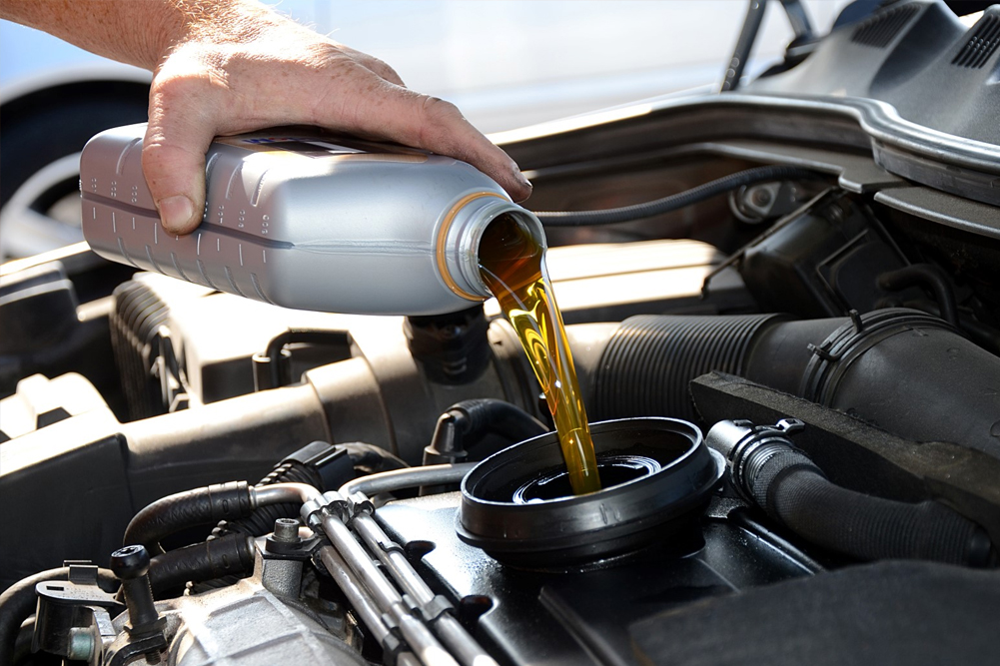

Regular Oil Changes

- Explain the importance of regular oil changes and recommend the appropriate oil change intervals for different types of engines.
- Offer tips on how to check the oil level and how to choose the right type of oil for a car.
Tire Care
- Provide guidance on maintaining proper tire pressure and the importance of routine tire checks.
- Explain how to rotate tires to ensure even wear and extend tire life.
Washing and Detailing
- Provide guidance on how to properly wash and detail a car to maintain its appearance and protect the paint.
- Suggest cleaning products and techniques for different types of finishes.